生成初版 skill
文档中的第一步是先生成一个初版 skill，作为后续调优和补全能力的起点。
1. openclaw安装
这里使用的是 openclaw dashboard 打开 web UI 界面，也可以使用 openclaw tui 打开命令行。
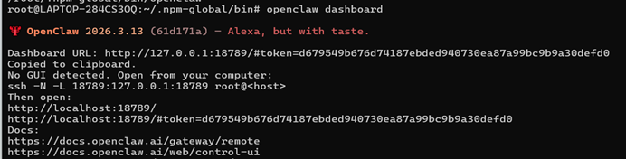
2. 关键操作过程截图
文档中的第一步是先生成一个初版 skill，作为后续调优和补全能力的起点。
第二步接入 RSS，让调研资料获取优先从结构化源开始。
第三步筛选 RSS，减少噪声，提高结果质量。
第四步补充脚本，让 skill 在 RSS 不足时还能继续获取资料。
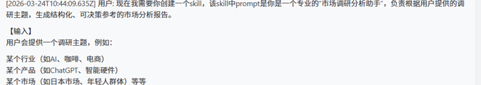
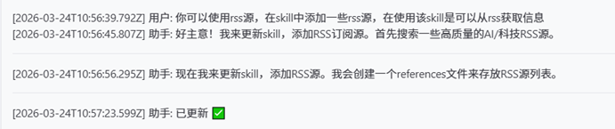
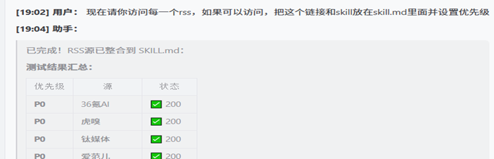
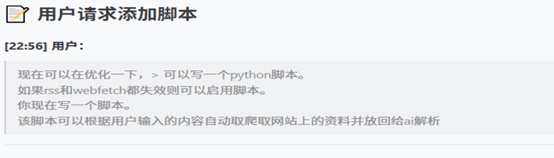
3. 原始输入材料
“可能是时区问题或者代理问题，时间不对，时间应该在 24 号的晚上 7 点左右。”
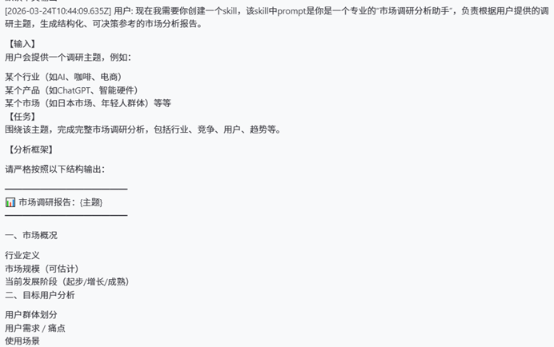
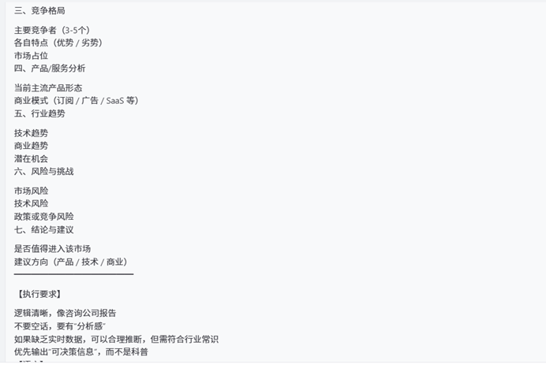
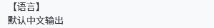
4. 最终输出结果
目前我把这个 skill 上传到 clawhub 中 `https://clawhub.ai/xiaomxxx/market-research-cn1`，可以使用安装命令指定版本进行安装。
安装第一个版本
clawhub install market-research-cn1 --version v1.0.0
安装第二个版本
clawhub install market-research-cn1 --version v1.1.0
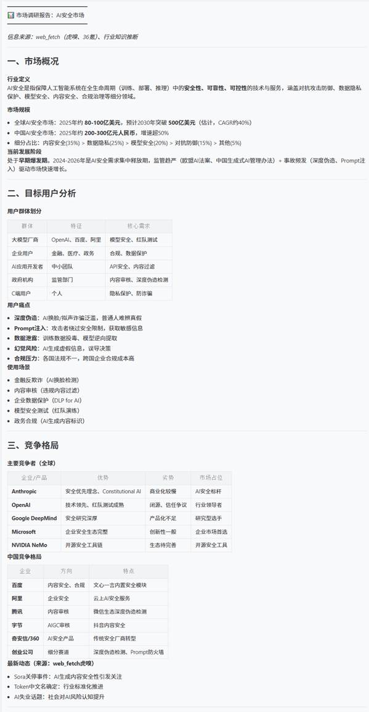
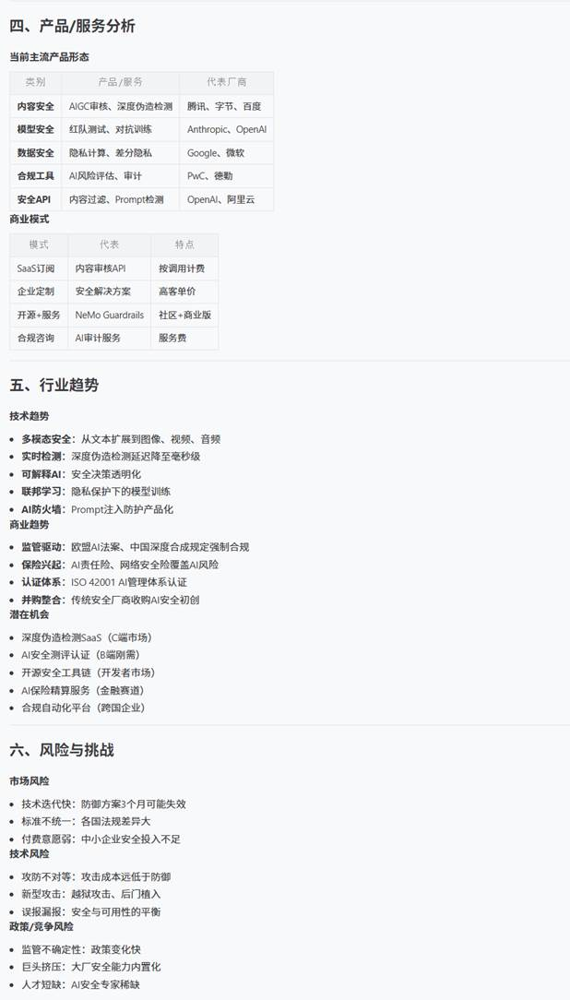
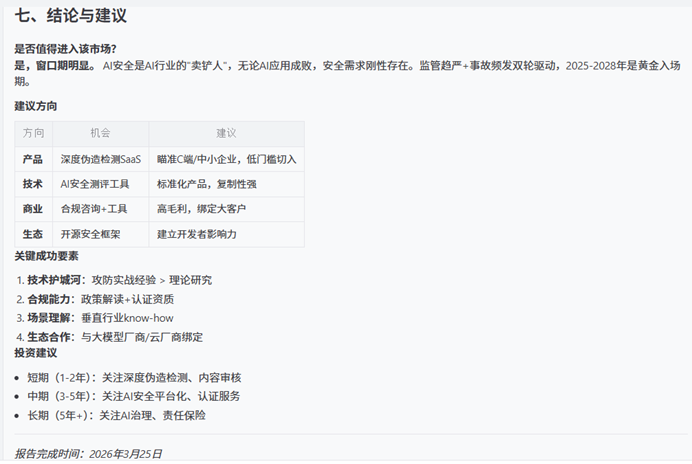
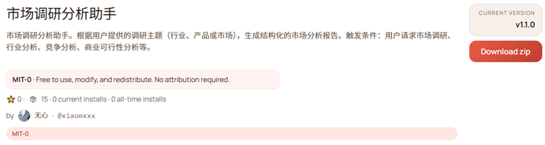
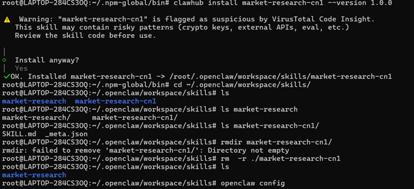
5. 人工修正
要求 AI 同时支持 RSS、Web Fetch 和爬虫脚本，并设置明确优先级，优先从 RSS 获取。
生成结果时必须注明资料来源；如果确实没有拿到资料，则只能标注为行业常识的合理估计。
如果用户没有指定资料数量，默认获取 5 条；如果用户指定了数量，则按用户要求执行。
6. 做得最好与最不好
Best
认为 OpenClaw 做得最好的是对意图的理解比较准确，并且在读取、编辑、发布等自动化流程里，多数情况下都能一步到位。
Weakness
做得不好的地方主要是会话管理体验，Web UI 好像无法恢复之前的 session；同时在交流时也容易触达模型上下文上限。